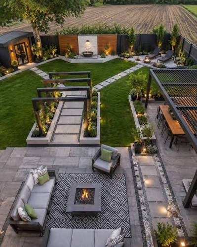
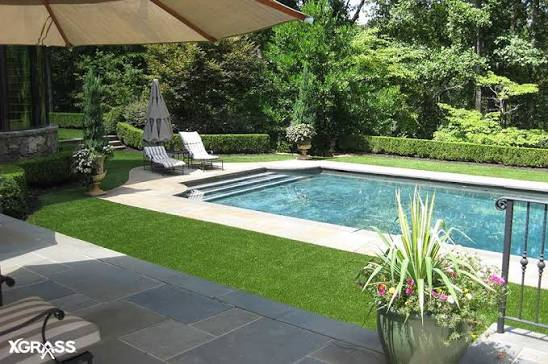
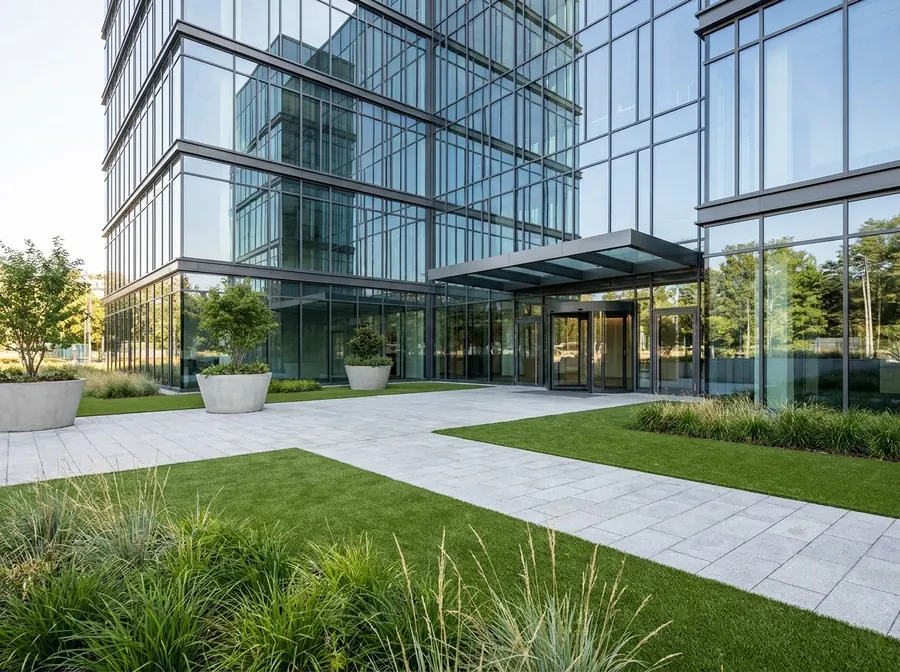
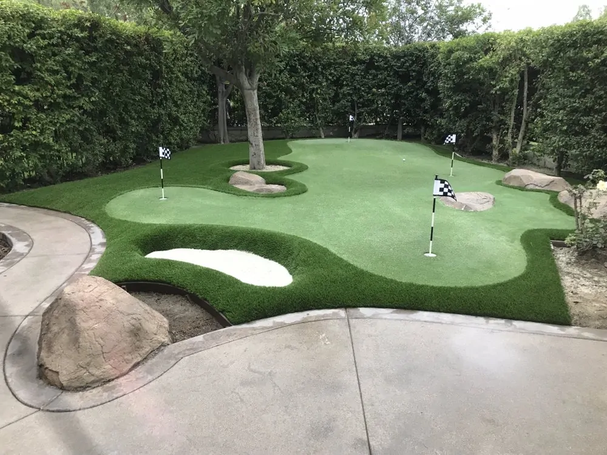

Your Private Resort, Always in Bloom.
Residential Turf: Effortless Elegance for Your Home
Transform your residential landscape into a private oasis. Whether you are looking to revitalise your front yard curb appeal, create a safe and mud-free backyard play area for children and pets, or frame a stunning poolside retreat, our residential luxury lawns deliver unmatched beauty with zero weekend maintenance.
Key Applications
- Front Yard Curb Appeal: Make a breathtaking first impression with a lush, manicured street-side lawn that never fades.
- Backyard Sanctuaries: Create clean, functional outdoor living rooms ideal for entertaining, relaxing, and family life.
- Poolside Surrounds: Enjoy splinter-free, slip-resistant, and ultra-draining luxury turf right up to the water's edge.
Commercial Turf: Exceptional Impressions for Businesses
Professional Presentation That Never Wavers.
First impressions dictate business success. New Leaf Luxury Lawn partners with corporate offices, luxury apartment complexes, boutique hotels, retail spaces, and rooftop venues to deliver immaculate, maintenance-free green spaces that project success, cleanliness, and prestige year-round.
Commercial Benefits
- Maximum Curb Appeal, Minimum Overhead: Eliminate ongoing mowing, weeding, and watering costs while keeping your property looking pristine for clients and tenants.
- High-Traffic Durability: Engineered to withstand heavy foot traffic without wearing down, thinning, or creating bald spots.
- All-Weather Performance: Rapid-drainage backing ensures your commercial grounds look clean and usable immediately after heavy rainstorms.
Pet-Friendly Lawns: Clean, Safe & Odour-Free
Luxury Designed for Every Member of the Family — Paws Included.
Love your pets, but hate the yellow spots, mud tracking, and torn-up grass? Our specialised pet-friendly turf systems are engineered from the ground up to keep your furry friends safe, happy, and your yard pristine.
Why Pet Owners Choose New Leaf Luxury Lawn
- Advanced Drainage Systems: Premium permeable backings combined with antimicrobial infill prevent liquid absorption and neutralise odours.
- No Mud, No Mess: Keep paws clean and prevent pets from tracking dirt and mud through your luxury home.
- Durability and Comfort: Non-toxic, lead-free fibres that are cool underfoot, soft on paws, and tough enough for active play.
Putting Greens: Professional Grade at Your Doorstep
Perfect Your Short Game at Home.
Bring the country club experience directly to your backyard. Our custom-designed backyard putting greens are engineered to professional specifications, offering true ball roll, realistic green speeds, and immaculate aesthetics.
Features
- Custom Design: Tailored breaks, contours, and fringe cuts to match your preferred level of golfing challenge.
- Zero Maintenance Greens: No rolling, mowing, or fertilising required to keep your green championship-ready every single day.
- Multi-Hole Layouts: Designed to fit your exact available space, from compact practice areas to expansive multi-cup master layouts.
Gallery / Portfolio: Visual Proof of Excellence
A Showcase of Extraordinary Outdoor Transformations.
Explore our portfolio of recent residential and commercial projects. From sprawling backyard transformations and sleek modern rooftops to resort-style pool decks and pristine putting greens, see how New Leaf Luxury Lawn brings luxury visions to life.




Project categories: Modern Residential Transformations · Poolside & Patio Elegance · Commercial & Corporate Landscapes · Custom Putting Greens
Sustainability & Technology: The Science of Luxury
Smart Luxury for a Sustainable Future.
Choosing artificial turf from New Leaf Luxury Lawn is not just an aesthetic upgrade — it is an investment in environmental responsibility. We combine cutting-edge materials science with eco-conscious design principles.
Key Sustainable Benefits
- Water Conservation: Save thousands of litres of municipal water annually in drought-prone or water-restricted regions.
- Zero Chemicals: Eliminate the need for toxic pesticides, synthetic weed killers, and chemical fertilisers that run off into local water tables.
- Carbon Footprint Reduction: Say goodbye to gas-powered lawn mowers, blowers, and trimmers running on your property week after week.
Frequently Asked Questions
- Does luxury artificial turf look and feel fake?
- Not at all. New Leaf Luxury Lawn uses multi-tone polyethylene and polypropylene fibres designed to replicate the exact colour variations, blade shapes, and tactile softness of natural, premium grass.
- How does the lawn handle heavy rain and drainage?
- Our installations feature high-flow permeable backing systems capable of draining large volumes of water per hour, ensuring your lawn dries rapidly with no puddling.
- What is the lifespan of a New Leaf Luxury Lawn installation?
- Our premium lawns are built to last, featuring strong UV-stabilisation warranties designed to provide 15 to 20+ years of gorgeous performance.
- How do I clean and maintain the lawn?
- Maintenance is minimal. Occasional rinsing with a hose to remove dust, light brushing of high-traffic blades, and clearing away fallen leaves is all it takes.
Not sure which service is right for you?
Get a Free Quote